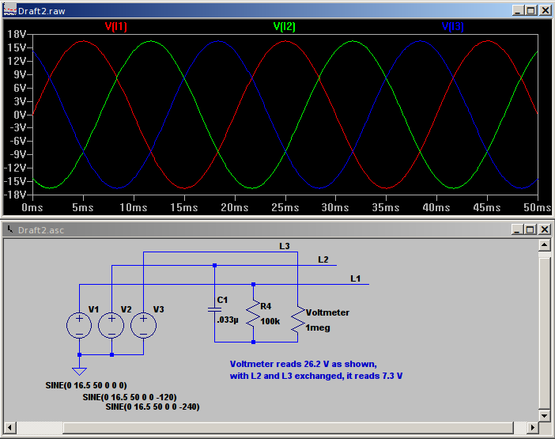

Living in Denmark I have at 3 phase installation and I am trying to use the emonTx3_4_3Phase sketch. However I have a couple of questions.
1. In the sketch is mentioned using a CT4 "on a load/infeed connected line-neutral". I do not understand what measuring the line-neutral does for me? (improve accuracy ?) I assume line-neutral means the neutral (blue) wire.
2. I can also see that CT4 has a different Ical - is there a special sensor than the normal bought in the emon shop or does it just need a different calibration when pluged into CT4.
3. I am trying to think about a way to measure in which sequence the phases are ordered (without a oscilloscope). I can of course hope that it is installed in the right order in the the circuit breaker.
Re: Using the emonTX3_4_3Phase sketch
1. It means that your infeed is connected between one of the line conductors (brown, black, grey) and the neutral conductor (blue).
2. CT4 also has a different burden resistor in the emonTx, that is the reason for the different Ical. That assumes that the CT is the same. If you use a different CT, or you change the burden resistor, you will need a different Ical.
3. It is difficult to check the phase sequence - an old electricians joke is if the (3-phase) motor turns in the right direction first time, go and buy a lottery ticket because today is your lucky day! The best you can do is assume that the circuit breaker is correct, it probably will be, and when you get it working, check that the results are what you expect. It should be easy to exchange L2 & L3 if not.
It is possible to use an R-C network to derive a phase-shifted voltage between two phases, and measure the voltage between that and the third phase, but I do not recommend you attempt that as it could well be dangerous unless you know exactly what you are doing.
Re: Using the emonTX3_4_3Phase sketch
Thanks for the reply.
1. I do not quite get it yet. What is an infeed line. Is that if I have power production (solar, heatpump etc)?
3. I figured it out when I calibrated the the phaseshift and they where in order L1, L3, L2 (black, black, brown).
Re: Using the emonTX3_4_3Phase sketch
An "infeed" is the accepted term (in electrical power engineering in the UK) for the source of power that feeds in to a distribution board or switchboard.
Re: Using the emonTX3_4_3Phase sketch
Here is a way of determining the phase rotation. This is a Spice simulation. V1, V2 & V3 represent 3 ac-ac adapters connected in star.
